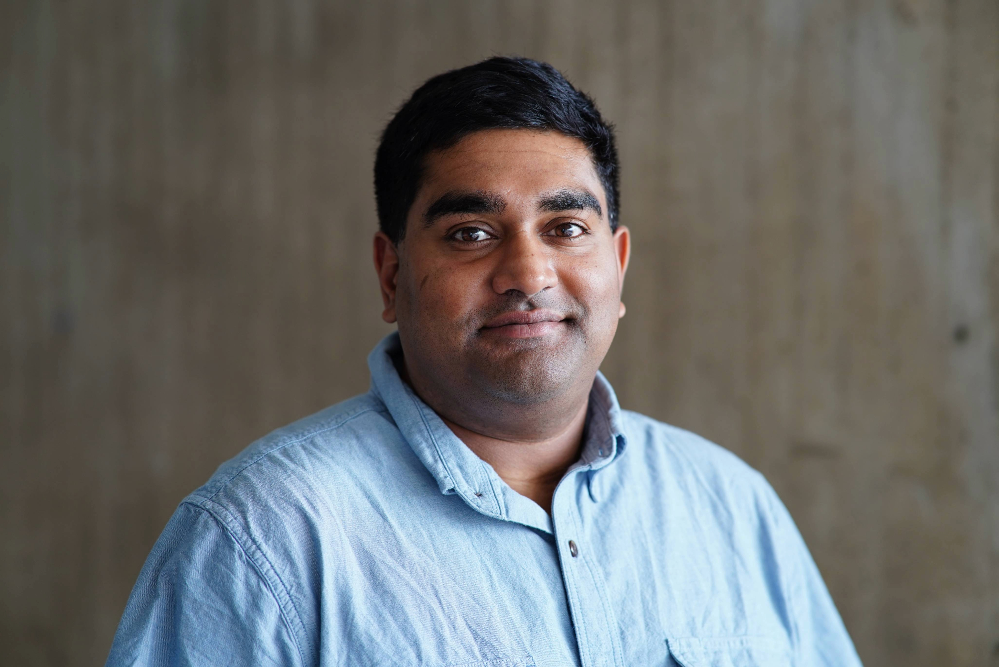

Arjun G. Kumar
MS in Complex Network Analysis, Network Science Institute
Northeastern University, Boston, MA
Graduate Certificate in Computational Social Science
College of Social Sciences & Humanities
Arjun is a Master’s student whose research interests include the use of network science to study voter behavior, sports leagues and markets, and flows of trade, capital, and influence between countries. He’s also a former EMT and ski patroller, and spends as much time as possible outdoors, skiing, hiking, biking, and camping. He has a B.S. in Mathematics from the University of North Dakota and a B.A. in Creative Writing, with a minor in Economics, from Weber State University.